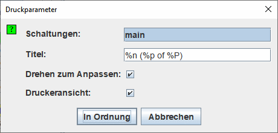

Wenn Sie den Punkt | Drucken...nbsp;| aufrufen, öffnet Logisim ein Dialogfenster zur Konfiguration des Ausdrucks.

Drucken konfigurieren
- Schaltungen: Eine Liste, aus der Sie eine oder mehrere Schaltungen auswählen können, deren Bild gedruckt werden soll. (Leere Schaltungen erscheinen nicht in dieser Liste.) Logisim druckt eine Schaltung pro Druckseite. Wenn die Schaltung zu groß für die Seite ist, wird das Bild passend verkleinert werden.
-
Titel: Der Text, der zentriert oben auf jeder einzelnen Seite erscheinen soll. Die folgenden Substitutionen werden im Text vorgenommen.
%n Name der Schaltung auf der Seite %p Seitennummer %P Gesamtseitenzahl %% Ein einzelnes Prozentzeichen ('%') - Drehen zum Anpassen: Wenn angekreuzt wird Logisim das Druckbild um 90 Grad drehen, wenn dies eine bessere Ausnutzung der Druckseite erlaubt.
-
Druckeransicht: Ändert den Stil des mit den Statusinformationen erzeugten Bildes oder nur den Schaltplan.

Diese Option ist auch in den Voreinstellungen im Layouteditor-Tab verfügbar. Dadurch wird die Anzeige im Arbeitsbereich geändert.
Nach dem Anklicken der Schaltfläche In Ordnung wird Logisim den Standard-Dialog zum Einrichten der Seite vor dem Druck der Schaltungen anzeigen.